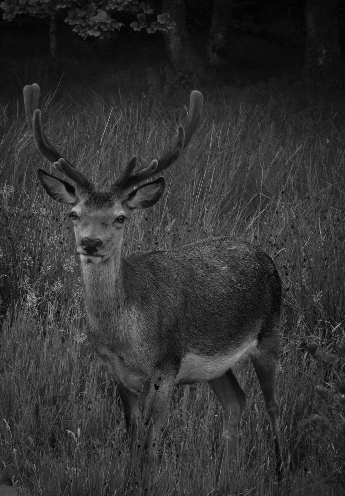

Experience built around trust and responsibility.
Stagstone Protection brings practical experience in Royal protection, residential security, close protection and estate environments to help clients create thoughtful, well-managed arrangements.
 Founder & Director
Founder & Director
Scott Cox MVO
Scott Cox is a security and estate professional with 22 years of British Army service and extensive experience in Royal and private protective security.
During his military career, he completed eight operational tours and held senior Sergeant Major appointments, leading teams of more than 100 personnel and overseeing training, budgets and operational standards.
He later held senior Royal and heritage security roles in Scotland, including at Balmoral Castle and the Palace of Holyroodhouse, with senior responsibility for Royal security in Scotland. Working closely with estate leadership, he contributed to protective planning and site operations.
- Member of the Royal Victorian Order
- Mentioned in Dispatches
Judgement, consistency and accountability.
Scott has developed risk assessments, standing orders and operating procedures across military and private security settings. His residential security experience includes advising on protective staffing and security measures at UHNW properties, as well as 12 months supporting a UHNW family’s Residential Security Team.
A former instructor at the Infantry Battle School, Scott has trained and mentored soldiers and junior leaders, emphasising sound judgement, consistency and accountability.
He now brings this experience to Stagstone Protection’s consultancy work in estate and residential security, risk management, and the planning and coordination of RST and CPO arrangements.
Scott was appointed a Member of the Royal Victorian Order for services to the Crown and was Mentioned in Dispatches for gallantry.
A career at a glance.
-
22 years
British Army
Eight operational tours and senior Sergeant Major appointments, leading teams of more than 100 personnel and overseeing training, budgets and operational standards. Mentioned in Dispatches for gallantry.
-
Instructor
Infantry Battle School
Training and mentoring soldiers and junior leaders, with an emphasis on sound judgement, consistency and accountability.
-
Royal & heritage security
Senior security roles in Scotland
Including Balmoral Castle and the Palace of Holyroodhouse, with senior responsibility for Royal security in Scotland. Appointed a Member of the Royal Victorian Order for services to the Crown.
-
Private clients
UHNW residential security
Advising on protective staffing and security measures at UHNW properties, and 12 months supporting a UHNW family’s Residential Security Team.
-
Today
Founder, Stagstone Protection
Consultancy in estate and residential security, risk management, and the planning and coordination of RST and CPO arrangements.

The stag and the stone.
The stag stands for watchfulness and quiet strength in the landscapes we know best; the stone for the solid, dependable foundations every good security arrangement is built on. Together they reflect how we work — alert, steady and built to last.


Speak with Scott in confidence.
For a confidential discussion about estate management, residential security, RSTs or CPO support.
Contact Stagstone Protection